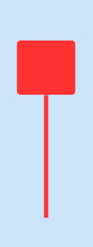
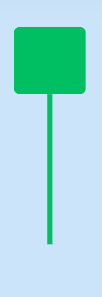
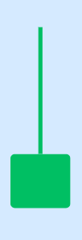
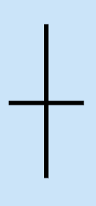
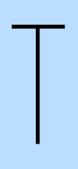
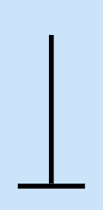

K線組合型態
陽線
大陽線 |
小陽線 |
||
 |
開盤價即為最低價，隨後股價一路上攻，最後收在股價最高點，代表買盤力道強勁。 |  |
股價跌到低點時有買盤支撐，但漲到高點又遇到賣壓，最終由多方略勝一籌，推升股價呈現上漲狀態，K 線出現這樣的型態，通常是一種反轉訊號，如果在大漲後出現，表示高檔震盪﹔反之，如果在大跌後出現，可能表示股價已觸底，未來股價有望反彈。 |
光頭陽線 |
光腳陽線 |
||
 |
開盤後股價一度下跌，但因有買盤支撐，推升股價一路走升，最終收在最高價位，當下影線越長，代表反彈的力道越大，屬於多頭上漲的訊號。 |  |
開盤後股價一度衝至最高點，但在高檔區遭遇賣壓，最終由多方略勝一籌，收盤價仍高於開盤價，當上影線越長，代表賣盤力道較強、拉回程度越大。 |
陽線錘子 |
倒線錘子 |
||
 |
股價大跌之後，空方力道減弱，隨後買盤一路買到最高價作收，如果在長期下跌的情況下，看到這樣的型態，代表買盤已積累一段時間後開始釋放，可以視為股價底部支撐的訊號。 |  |
股價大漲之後，多方力道減弱，隨後股價被賣盤拉回，但最終由多方略勝一籌，收盤價仍高於開盤價，上影線的長度表示拉回的程度，上影線越長，代表賣壓越大。 |
陰線
大陰線 |
小陰線 |
||
| 開盤價即是最高價，隨後股價一路下滑，最後收在股價最低點，代表賣方力道強勁，下跌幅度越大，如果在長期下跌的情況下，又看到這樣的型態，股價可能會加速暴跌。 | 股價跌到低點時有買盤支撐，但漲到高點又遇到賣壓，最終由空方略勝一籌，使得股價呈現下跌狀態，當中間實線長度越短，代表雙方勢均力敵的程度越高。K 線出現這樣的型態，通常代表市場進入弱勢盤整。 | ||
光頭陰線 |
光腳陰線 |
||
| 開盤後股價一度下跌，但有買盤支撐，推升股價回升，最終收盤價仍低於開盤價，如果在長期下跌的情況下，出現這樣的型態，可能為股價觸底的訊號。 | 開盤後股價一度衝至最高點，但因上檔賣壓沉重，最終由空方略勝一籌，拉回至最低價收盤。如果是在上漲末升段，K 線出現這樣的型態，通常被視為反轉下跌的訊號，多頭可能會陷入被套牢的窘境。 | ||
陰線錘子 |
倒錘陰線 |
||
 |
股價大跌之後，多頭力量慢慢凝聚，隨後買盤一路推升股價走升，最終仍由空方略勝一籌，如果在持續走空後的低檔區，看到這樣的型態，通常視為空頭轉向多頭的訊號﹔反之，出現在高檔區則可能由多轉空。 |  |
股價大漲之後，空方力量慢慢凝聚，隨後賣盤一路賣到最低價作收，上影線的長度表示拉回的程度，上影線越長，代表賣壓越大。 |
十字線
十字線 |
T字線 |
||
 |
（開盤價=收盤價） 十字線代表多空雙方勢均力敵，開盤價與收盤價一致，當十字線出現在近期波段的高點，則表示多方力量減弱，股價可能會下跌﹔反之，十字線出現在近期波段的低點，則表示空方力量轉弱，股價則有上漲的可能。 |
 |
（開盤價=收盤價=最高價） 雖然一開始賣壓較大，造成股價跌深，但隨後因買氣回升，股價一路回升到開盤時的價位，並收在最高點，當下影線越長，代表反彈力道更強勁，屬於多方勝利，如果 T 字線出現在上漲波段，表示股價可能已到頂部，投資人可能要考慮是否要賣出獲利了結。 |
一字線 |
倒 T 字線 |
||
| （開盤價=收盤價=最高價=最低價） 一字線通常屬於極端狀態，代表投資人非常看好或非常看壞，例如開盤直接跳空漲停直到收盤、開盤跳空跌停一直到收盤，這兩種情況都會呈現一字線，另一種情況，就是非常冷門的股票，一天只在同個價位成交一兩筆，這時也會出現一字線。 |
 |
（開盤價=收盤價=最低價） 雖然一開始的買氣很強，推升股價衝到最高點，但隨後因賣壓出現，一路跌至開盤時的價位，並收在最低點，如果倒 T 字線出現在上漲波段，代表股價可能已開始轉弱，當上影線越長、賣壓越沉重。 |
|